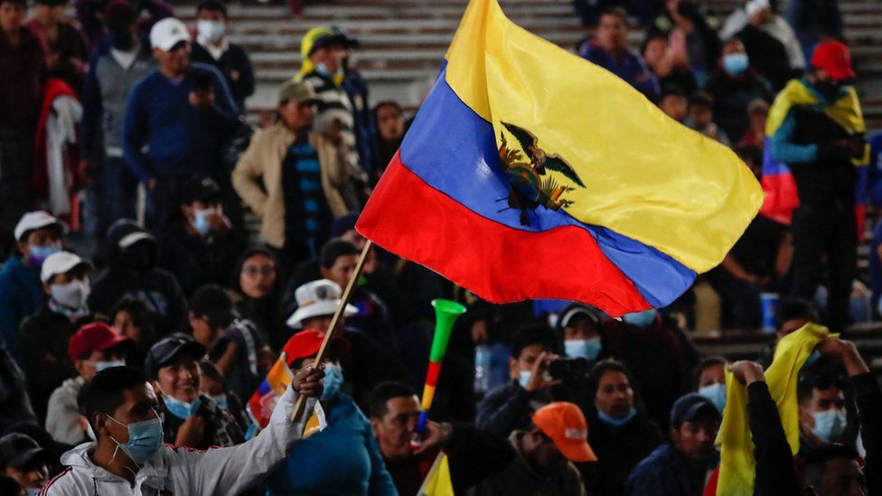

Categories:: Coup; reparation law; indigenous peoples; truth commission.
Actors: Ecuadorian State; Police and Armed Forces from Ecuador; various political parties from Ecuador; indigenous peoples and their organisations; other civil organisations. The report of the CVE recognises 456 cases of victims of various forms of human rights violations in the 1984-2008 period, though it is noted that this number refers only to cases that were presented for inquiry to the commission.
1984 : In August, after winning the election, Rafael Febres-Cordero became president. According to the report of the CVE, 68% of the cases investigated occurred during his authoritarian rule.
1985 : Luis Vaca, Susana Cajas and Javier Jarrín, members of the guerrilla group Alfaro Vive Carajo (AVC), were detained and tortured by the army. Citizens with known or alleged links to the group were violently persecuted by the Febres-Cordero administration.
1985 : Teacher Consuelo Benavides Ceballos was detained, tortured, and killed by members of the navy in the Esmeraldas province.
1986 : Representatives of various indigenous peoples from Ecuador found the Confederación de Nacionalidades Indígenas del Ecuador (CONAIE).
1988 : The Restrepo Arismendi brothers, minors Carlos and Santiago, were detained and tortured by police forces. Their bodies were forcibly disappeared and have not yet been found.
1990 :During the presidency of Eduardo Ballán, the CONAIE led the first of the mass mobilisation episodes known as “levantamientos indígenas”. Their demands pertained land access and legislation, as well as recognition of plurinationality.
1993 : Episode known as “11 del Putumayo”. Following a deployment of the army in the Sucumbíos province, 11 campesinos were detained and tortured. They were kept imprisoned for 3 years.
1996 : Abdala Bucaram was elected president. Amidst mass public protests against the government, Bucaram was ousted in 1997 by the Congress.
1998 : Jamil Mahuad was elected president. In 2000, amid mass indigenous protests, the army staged a coup and installed Gustavo Noboa as head of government.
2002 : Lucio Gutiérrez was elected president. In 2005, following the civil protests known as “Rebelión de los forajidos”, Gutiérrez was ousted by the Congress.
Memory initiatives Informe: sin verdad no hay justicia (2010): a document comprising five volumes that detail the work of the Comisión de la Verdad regarding the 1983-2008 period. Ley para la Reparación de las Víctimas y la Judicialización de graves violaciones de Derechos Humanos y Delitos de Lesa Humanidad ocurridos en el Ecuador entre el 4 de octubre de 1983 y el 31 de diciembre de 2008 (2013): a legal instrument that defines reparation measures for victims of human rights violations recognised by the work of the CVE. Within the framework established by this law, in 2014 the Defensoría del Pueblo creates the Dirección Nacional de Reparación a Victimas y Combate a la Impunidad.
Sites of Memory Museo de la memoria: a commemorative space that is expected to be constructed by the Ecuadorian state, following what is established in the Ley para la Reparación. Besides some preliminary studies, the space has not yet materialised.
Organisations Fundación Regional de Asesoría en Derechos Humanos (INREDH): an organisation formed in 1993, known for their work on the Putumayo case. Provides legal support related to human rights issues. Comité de víctimas y familiares de delitos de lesa humanidad y graves violaciones de derechos humanos: an organisation currently led by Clara Merino, who has been active since the 1980s in the promotion of human rights in Ecuador. Comisión Ecuménica de Derechos Humanos (CEDHU): a non-governmental organisation that collaborates with various groups around human rights issues. It was formed in 1978, after a massacre of workers at the hands of police forces. Comisión de la Verdad del Ecuador: an investigative body created by presidential decree in 2007, during the government of Rafael Correa, with the aim of researching human rights violations occurred between 1983 and 2008.